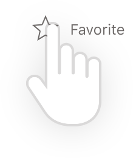

<!DOCTYPE html>
<html ng-app="myApp">
	<head>
		<meta charset="utf-8">
		<meta name="viewport" content="initial-scale=1, maximum-scale=1, user-scalable=no, width=device-width">
		<title>Muogle</title>

		<link href="lib/ionic/css/ionic.css" rel="stylesheet">
		<link href="css/style.css" rel="stylesheet">

		<!-- IF using Sass (run gulp sass first), then uncomment below and remove the CSS includes above
		<link href="css/ionic.app.css" rel="stylesheet">
		-->


		<!-- ionic/angularjs js -->
		<script src="lib/ionic/js/ionic.bundle.js"></script>
		<script src="lib/ionic-platform-web-client/dist/ionic.io.bundle.min.js"></script>
		<script src="lib/ionic-ion-swipe-cards/ionic.swipecards.js"></script>
 		<script src="lib/ngstorage/ngStorage.min.js"></script>

		<!-- cordova script (this will be a 404 during development) -->
		<script src="js/ng-cordova.min.js"></script>
		<!-- Cordova is bootstrapped by ionic-platform-web-client, uncomment this if you remove ionic-platform-web-client... -->
<!-- <script src="cordova.js"></script> -->

		<!-- your app's js -->
		<script src="js/app.js"></script>
		<script src="js/controllers.js"></script>
		<script src="js/services.js"></script>


				<!-- ionic/jquery tooltipser -->
		<script src="dist/angular-tooltips.min.js"></script>
		<link href="dist/angular-tooltips.min.css" rel="stylesheet" type="text/css">
	</head>
	<body ng-controller="MainCtrl">
	  	<div>
			<ion-nav-view animation="slide-left-right"></ion-nav-view>
	  	</div>
	  	<script id="index.html" type="text/ng-template">
			<ion-view >
			  	<ion-content has-header="true" scroll = "false" padding="false" class="home">
		  			<div class="bar bar-footer" keyboard-attach class="bar-assertive" style="    display: -ms-flexbox; display: -webkit-flex;  display: flex; -webkit-justify-content: center;    -ms-flex-pack: center;    justify-content: center; height: initial; -webkit-align-items: flex-end; align-items: flex-end;">
				  		<div style="    display: -ms-flexbox; display: -webkit-flex;  display: flex;    display: - webkit-flex; /* Safari */  -webkit-flex-direction: column; flex-direction: column;  bottom: 0em;width:100%; ">
				  			<div style="display: -ms-flexbox; display: -webkit-flex;  display: flex; -webkit-justify-content: center;    -ms-flex-pack: center;    justify-content: center; align-items:center; -webkit-align-items:center, width: 75%; height: 143px;;">
				  				
				  			</div>
					  		<div class="row list list-inset responsive-sm" style="    left: 0.8em;background-color:transparent;/* height: 8.125em; */padding-top: 0;margin:0em;">
					  			<div class="col" style="margin:0em" >
								  	<label class="item item-input homeLabel">
								    	<input type="text" placeholder="What are you interested in?" ng-model="card.tag" ng-trim=false>
								  	</label>			  				
					  			</div>
							</div>
				  			<div class="rowHome" style="HEIGHT: 11.125em; background-color:transparent;padding-top:0;">
				  				<div style="left: 1.25em;position: absolute;">
									<a class="button" ng-click = "randomFct()">DISCOVER</a>
								</div>
								<div style="right: 1.25em;position: absolute;">
									<a class="button" ng-click="searchTag()">SEARCH</a>
								</div>
				  			</div>
				  			<!--<div class="rowHome" style=" margin-top: 0.5em;background-color:transparent;padding-top:0;display: -ms-flexbox; display: -webkit-flex;  display: flex; -webkit-justify-content: center;    -ms-flex-pack: center;    justify-content: center;">
								<div style="right:auto; left:auto">
									<a class="button" href="#/list">CATEGORY</a>
								</div>
				  			</div>-->
			  				<div style="    display: -ms-flexbox; display: -webkit-flex; display: flex;     -webkit-flex-direction: column; -ms-flex-direction: column;  flex-direction: column;" ng-click="goToFavorite()">
							  	<div style="    display: -ms-flexbox; display: -webkit-flex; display: flex; -webkit-justify-content: center;    -ms-flex-pack: center;    justify-content: center;"></div>
							  	<div style="float:left; color:#D9DD53; font-size: 0.6875; display: -ms-flexbox; display: -webkit-flex; display: flex; -webkit-justify-content: center;    -ms-flex-pack: center;    justify-content: center;">Favorites</div>
							</div>
				  		</div>
					</div>
			  	</ion-content>
			</ion-view>
	  	</script>
	  	<script id="content.html" type="text/ng-template">
			<ion-view class="Content">
			  	<ion-content has-header="true" padding="true" scroll = "false">
			  		<div class="bar bar-header">
			  				<a ng-click="goCategory()" class="imgButton button icon position-left"> </a>
							<a ng-click="backHome()" class="imgButton button icon position-center"> </a>
							<a ng-click="backHome()" class="imgButton button icon position-right"> </a>
					</div>
					<!-- submenu of categories in muogle it -->
					<div class="bar bar-subheader">
					  	<ion-scroll scrollbar-x="false" style="width:auto; border-bottom: solid thin #ddd; min-width: 100%" zooming="true" direction="x" has-bouncing="false" overflow-scroll="false">
						  	<div style="width: -webkit-max-content; width: max-content; height: max-content;">
						  		<div class = "muogleCategory" ng-click = "setCardTag(card.tag)" ng-class="{'active' : active.state == 'All'}"> All</div>
						  		<div class = "muogleCategory" ng-repeat = "info in fact.data.items"  ng-click ="setCardCategory(info.category)" ng-class="{'active' : active.state == info.category.description}"> {{info.category.description}}</div>
						  	</div>
						 </ion-scroll>
					</div>
					<!-- card in muogle it-->
					<ion-content scroll="false">
						<ion-slides slider="data.slider">
							<!--<div ng-switch on="searchEmpty" style="width: 100%;height: inherit;">-->
					  			<div ng-show="searchEmpty==null" style=" display: -ms-flexbox; display: -webkit-flex; display: flex; -webkit-align-self: center;    align-self: center;     padding: 20px;   ">
									<div style="height: 100%; padding-top: 5.3em;">
										<div style="text-align: center;color: #D5D3D3;"> 
											<span style= "font-size: 2.5em;font-family: Antonio_Bold;line-height: 1em;"> Nothing found for your search</span> 
											<br/>
											Tap the category icon to browse by category<br>
											Or You can tap the search icon to search again
										</div>
								  	</div>
								</div>
								<ion-slide-page ng-repeat = "info in fact.data.items | categoryFilter:card" ng-show="searchEmpty!=null">
									<ion-content scroll = "false" class="slideContainer" ng-class = "{sliderUp: slidePosition}">
										<ion-content scroll="false" class = "slid">
											<div class="slideBackground" ng-style = "{'background-image':'url({{info.backgroundImage}})'}">
											</div>
								  			<p class = "child">{{info.content}}</p>
									  	</ion-content>
								  		<div class = "slideValiderContainer" >
								  			<div ng-class = "{slideValiderGray: slideValiderGrayValue, slideValider:!slideValiderGrayValue}" native-transitions ng-click = "slideUp($event)"></div>
								  		</div>
								  	</ion-content>
								  	<ion-content scroll = "false" class = "verifier">
										<ion-scroll scrollbar-x="false" style="width:80%; height: auto; margin-left:10%; margin-right:10%" zooming="true" direction="x" has-bouncing="false" overflow-scroll="false">
						  					<div style="width: -webkit-max-content; width: max-content; height: max-content;">
										  		<div class = "validateurWrapper muogleVerifier" ng-repeat = "verifier in info.verifiers" ng-click="openPopover($event, verifier)"  style = "background-image: url('{{verifier.icon}}');" ng-class ="{'opacityNot':activeValidator.state == verifier.id}"></div>
											</div>
										</ion-scroll>	
									</ion-content>	
									<div class="bar bar-footer">
										<a ng-click="goBack()" class="imgButton button icon position-left"> </a>
										<a ng-click="openModal(info)" class="imgButton button icon position-center"> </a>
										<a ng-click="remove(info)" ng-if = "isFavorite(info)"  class="imgButton button icon position-right"> </a>
							    		<a ng-click="add(info)" ng-if = "!isFavorite(info)"   class="imgButton button icon position-right"> </a>
									</div>	
								</ion-slide-page>
							</div>
						</ion-slides>
					</ion-content>
			  	</ion-content>
			</ion-view>
	  	</script>
	  	<script id="random.html" type="text/ng-template">
			<ion-view class="random">
			  	<ion-content has-header="true" padding="true" scroll="false">
			  		<div id ="random">
			  			<div class="bar bar-header" >
							
						    
						</div>
					</div>
					<ion-content scroll = "false" class="slideContainer" ng-class = "{sliderUp: slidePositionRandom}" >
						<ion-content scroll="false" class = "slid">
							<div class="slideBackground" ng-style = "{'background-image':'url({{random.backgroundImage}})'}">
							</div>
				  			<p class = "child">{{random.content}}</p>
					  	</ion-content>
				  		<div class = "slideValiderContainer" >
				  			<div ng-class = "{slideValiderGray: slideValiderRandomGrayValue, slideValider:!slideValiderRandomGrayValue}" ng-click = "slideUpRandom($event)"></div>
				  		</div>
				  	</ion-content>
				  	<ion-content scroll = "false" class = "verifier">
  						<ion-scroll scrollbar-x="false" style="width:80%; height: auto; margin-left:10%; margin-right:10%" zooming="true" direction="x" has-bouncing="false" overflow-scroll="false">
		  					<div style="width: -webkit-max-content; width: max-content; height: max-content;">
						  		<div class = "validateurWrapper muogleVerifier" ng-repeat = "verifier in random.verifiers" ng-click="openPopover($event, verifier)"  style = "background-image: url('{{verifier.icon}}');" ng-class ="{'opacityNot':activeValidator.state == verifier.id}">
							</div>
						</ion-scroll>	
						<!--<ion-scroll scrollbar-x="false" style="width:80%; height: auto; margin-left:10%" zooming="true" direction="x" has-bouncing="false" overflow-scroll="false">
						  	<div class = "validateurWrapper" ng-repeat = "verifier in info.verifiers">	
						  		<div ng-click="openPopover($event, verifier)" class = "muogleVerifier" style = "background-image: url('{{verifier.icon}}');"></div>
						  	</div>
						 </ion-scroll>	-->
					</ion-content>	
					<div class="bar bar-footer">
						<a ng-click="goBack()" class="imgButton button icon position-left"> </a>
						<a ng-click="openModal(random)" class="imgButton button icon position-center"> </a>
						<a ng-click="remove(random)" ng-if = "isFavorite(random)"  class="imgButton button icon position-right"> </a>
			    		<a ng-click="add(random)" ng-if = "!isFavorite(random)"   class="imgButton button icon position-right"> </a>
					</div>	
			  	</ion-content>
			</ion-view>
	  	</script>

	  	<script id="list.html" type="text/ng-template">
			<ion-view class="category">
		  		<!--<ion-header-bar class="bar-header">
					<a class="button icon-left ion-home" href="#/">Go back!</a>
			  		<h1 class="title">Second Page</h1>
		  		</ion-header-bar>-->
				<div class="bar bar-header">
					<div class = "position-center"> </div>
				    <div class = "position-right-category"> </div>
				</div>
	  			<ion-content has-header="true" padding="true" style="padding-top: 3.15em;">
				  		<div class="category-item" ng-repeat = "info in category.items" ng-class="{'categoryNotActive': info.count == 0}" ng-click="categoryViewer(info.description)">
				  			{{info.description}}
				  		</div>
		  		</ion-content>
			</ion-view>
	  	</script>
	  	<script id="favorite.html" type="text/ng-template">
			<ion-view class="favorite">
		  		<div class="bar bar-header">
						
				</div>
			  	<ion-content class = "favoriteCards" scroll="true" style="padding-top: 4.62em;">
			  		<div ng-switch on="favorite.length" style="width: 100%;height: inherit;display: -ms-flexbox; display: -webkit-flex; display: flex; -webkit-align-self: center;    align-self: center;">
			  			<div ng-switch-when="0" style="display: -ms-flexbox; display: -webkit-flex; display: flex; -webkit-align-self: center;    align-self: center;     padding: 20px;   ">
						  	<div >
								<div style="display: -ms-flexbox; display: -webkit-flex; display: flex;-webkit-justify-content: center;    -ms-flex-pack: center;    justify-content: center;"> </div>
								<div style="text-align: center;color: #D5D3D3;"> <span style= "font-size: 2.5em;font-family: Antonio_Bold;line-height: 1em;"> Your favorites are empty</span> <br/>You can add any interesting post<br/>by following instruction above</div>
						  	</div>
						</div>
						<div ng-switch-default style="  width: 100%; ">
							<div class="favoriteWrapper" ng-repeat = "info in fact.data.items | favoriteFilter : favorite">
								<div class = "sectionCard">
									<ion-content scroll="false" class = "favoriteCard slid" ng-click = "highlight(info)">
										<div class="slideBackground" ng-style = "{'background-image':'url({{info.backgroundImage}})'}">
										</div>
							  			<p class = "child">{{info.content}}</p>
								  	</ion-content>
						  			<div class = "cardBottom">
						  				
							    		
						  			</div>
						  		</div>
						  	</div>
						</div>
					</div>
				</ion-content
			</ion-view>
	  	</script>
	  	<script id="quoteInfo.html" type="text/ng-template">
			<ion-view class="category quoteInfo">
				<div class="bar bar-header">
					<div class = "position-left"> </div>
					<div class = "position-center"> </div>
				    <div class = "position-right-category"> </div>
				</div>
	  			<ion-content class = "favoriteCards" has-header="true" padding="true" >
					<div class="favoriteWrapper">
						<div class = "sectionCard">
				  			<div class = "favoriteCard" style = "background-image: url('http://placehold.it/150x150');">
				  			</div>	
				  			<div class = "cardBottom">
				  				{{factContent}}
				  			</div>
				  		</div>
				  	</div>
		  		</ion-content>
			</ion-view>
	  	</script>
	  	<script id="popover.html" type="text/ng-template">
		  <ion-popover-view class = "validerName">
		  	<ion-content scroll="false" style="height:2.5em; text-align: center;">
		      {{popover.item.name}}
		    </ion-content>
		  </ion-popover-view>
		</script>

		<script id="my-modal.html" type="text/ng-template">
		  <ion-modal-view class="category quoteInfo">
		    <div class="bar bar-header">
		  					<a ng-click="remove(modal.cont)" ng-if = "isFavorite(modal.cont)"  class="imgButton button icon position-left"> </a>
				    		<a ng-click="add(modal.cont)" ng-if = "!isFavorite(modal.cont)"   class="imgButton button icon position-left"> </a>
							<a ng-click="closeModal(modal.cont)" class="imgButton button icon position-center"> </a>
							<a ng-click="shareNative(modal.cont.content)" class="imgButton button icon position-right"> </a>
				</div>
	  			<ion-content class = "favoriteCards" has-header="true" padding="true" >
					<div class="favoriteWrapper">
						<div class = "sectionCard">
				  			<div class = "favoriteCard" style = "background-image: url('{{modal.cont.fullBackgroundImage}}');">
				  			</div>	
				  			<div class = "cardBottom modalFont">

				  			{{modal.cont.notes}}
				  			</div>
				  		</div>
				  	</div>
		  		</ion-content>
		  </ion-modal-view>
		</script>
	</body>
 
</html>
